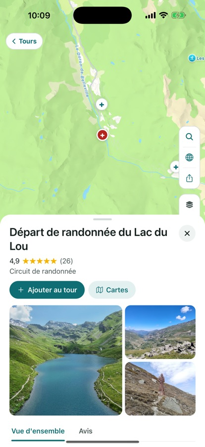

Toutes les fonctions de Motoseyir
Cette page grandit. Quand une fonction arrive, elle est ajoutée ici d’abord, sous le bon titre. Il y a quatre groupes ci-dessous : ville et coursiers, voyage, sur la route et après la sortie, rouler ensemble.
Pour la ville et les coursiers
Itinéraire le plus court
Une navigation classique te donne la route la plus rapide pour une voiture. À moto, ce qui fatigue n’est pas la minute mais le kilomètre. Motoseyir compare plusieurs variantes entre les deux mêmes points et propose la plus courte, même si elle prend un peu plus de temps. En navigation pas à pas : carte qui suit de près, instructions de virage, distance restante et heure d’arrivée.

Le meilleur ordre pour tes arrêts
Tu marques plusieurs points de livraison dans l’ordre que tu veux, et « Meilleur ordre » les réorganise tous pour la distance totale la plus courte. L’heure à laquelle tu arriveras à chaque arrêt est écrite au-dessus de l’itinéraire. Les deux captures ci-dessous viennent d’une sortie réelle : les mêmes quatre arrêts à Istanbul, 57,1 km dans l’ordre du motard, 46,9 km dans celui trouvé par Motoseyir. Plus de dix kilomètres d’écart.


Coût du carburant
Tu vois le coût estimé du carburant avant de partir, calculé dans l’unité de ton pays : litres aux 100 km en Europe, gallons et mpg aux États-Unis, avec les prix locaux. Tu saisis la consommation et le prix dans Réglages → Conduite ; le rapport d’économies se calcule à partir de ces deux valeurs.
Pour les voyages et les sorties du week-end
Modes Petites routes, Côte et Enduro
En mode Petites routes, l’itinéraire est calculé sur le serveur de Motoseyir, qui emprunte les liaisons de vallée et les petites routes goudronnées qu’une carte classique ignore. D’Ayder à Hemşin, cela donne 24,1 km ; les cartes générales affichent 49,9 km entre les deux mêmes points. Le mode Côte garde l’itinéraire le long du littoral avec le même serveur, et le mode Piste enduro cherche les chemins de terre et de graviers. Tu changes de mode avec le bouton en haut à gauche de l’écran du tour.

Des itinéraires légendaires prêts à rouler
Depuis les Alpes : Großglockner Hochalpenstraße, Stelvio, Furka–Grimsel–Susten, Sellaronda, Timmelsjoch, Col du Galibier. Depuis la Turquie : Şile–Ağva, la D400 lycienne, Assos–monts Kaz, Nemrut, Sapanca–Maşukiye–Kartepe. Et sept classiques américains : Tail of the Dragon, Cherohala Skyway, Blue Ridge Parkway, Beartooth Highway, Angeles Crest, Big Sur, Million Dollar Highway. Quand tu en ouvres un, il est copié dans tes propres tours avec ses étapes et son tracé.

Explorer
L’appli liste les criques, campings et adresses pour manger autour de ton itinéraire. Tu regardes la note et la distance à ton tracé, puis tu ajoutes celui qui te plaît comme étape. Touche un lieu et sa position, sa note et une courte description tiennent sur un écran.


Carnet de tour
Tu construis le tour avec des étapes ; quand tu arrives à l’une d’elles, elle s’inscrit toute seule dans le carnet et tu ajoutes une photo et une courte note. Une étape peut contenir jusqu’à trois photos, et les photos apparaissent en cartes sur la carte du tour. Elles sont conservées même si tu recommences le tour. Le carnet reste sur l’appareil ; si tu le partages dans la Communauté, trois photos au maximum partent — et c’est toi qui choisis lesquelles.

Pistes et GPX
Importe un fichier GPX et la trace arrive dans l’onglet Piste ; un tour venant du code d’un ami arrive dans l’onglet Tours. Tant que l’onglet Piste est vide, il explique à quoi il sert et propose une piste d’exemple pour ta région. Tu peux aussi transformer un de tes enregistrements de sortie en piste et l’exporter en GPX.
Sur la route et après la sortie
Alerte pluie sur l’itinéraire
Si de la pluie est attendue sur ton itinéraire, l’appli prévient à l’avance pour l’heure à laquelle tu y seras vraiment — étape par étape. Si le temps est sec, rien ne s’affiche.

Enregistrement de sortie et statistiques de piste
L’enregistrement continue écran éteint et la trace se colore selon la vitesse ; le temps de pause est compté à part et les longues pauses clôturent un segment d’elles-mêmes. En route, tu lances l’enregistrement avec le bouton en navigation et tu l’arrêtes avec le même bouton. Une sortie terminée peut partir vers ton groupe, devenir une piste ou être exportée en GPX. Pour une piste, l’appli calcule la distance, le dénivelé total et la pente la plus raide, et quand tu glisses le doigt sur le profil altimétrique le point se déplace sur la carte. Si le fichier ne contient pas d’altitude, elle est calculée depuis un modèle de terrain.

Guidage vocal
Les instructions de virage sont dites par la voix de ton téléphone, dans la langue de l’appli ; en turc, elles viennent d’une voix humaine enregistrée — réenregistrée à la dernière mise à jour. La distance suit ta région : kilomètres en Europe, miles et pieds aux États-Unis (« dans 500 pieds, tourne à droite »), miles et yards au Royaume-Uni.
Tourne le téléphone
Téléphone en paysage, les cartes et les listes se regroupent à gauche et la carte prend le reste. En navigation, le bandeau de manœuvre et la carte d’arrivée sont à gauche, la carte à droite ; Mes tours passe sur deux colonnes. Dans les larges supports posés au-dessus du réservoir, cette disposition tombe mieux.
Rouler ensemble
Sortie en groupe
Quand quelqu’un crée un groupe, un seul code est généré (A3K9MZ7P, par exemple) ; tout le monde le rejoint avec ce code et se voit sur l’itinéraire. La position n’est partagée que pendant un enregistrement de sortie ou une navigation, et elle est supprimée du serveur à la fin. Rejoindre est gratuit, créer un groupe demande Pro. Quand un membre ouvre un itinéraire avec Départ, le même itinéraire part vers les autres, qui l’ouvrent sur leur écran en un appui.
Le panneau du groupe a été simplifié à la dernière mise à jour : code en haut, personnes d’abord, réglages en bas. Le bouton de groupe indique quand le partage est actif, et une étape ajoutée à l’itinéraire est marquée sur la carte.

Inviter à rouler
Dans Mon groupe, « Inviter à rouler » à côté d’une personne envoie ton itinéraire et une liaison vocale en un appui. Celui qui la reçoit choisit « Rouler le même itinéraire » et ouvre le même tracé sur son téléphone, ou « Je roule derrière toi » et se branche seulement sur le son. Aucun code à taper, aucun écran à partager.
Intercom par internet
Pendant un itinéraire de groupe, l’intercom demande une fois ; en acceptant, le son ne part qu’à ton groupe. Tu peux aussi le lancer à la main sans aucun itinéraire. Un appui sur la pastille d’intercom en navigation coupe ton micro ; le bouton haut-parleur dans la liste des membres coupe un motard seulement dans ton oreille, le reste du groupe l’entend toujours. Associe ton casque ou tes écouteurs en Bluetooth et le son passe par là. Rien n’est enregistré sur notre serveur, le son ne va qu’aux personnes présentes dans le salon ; le salon se ferme à la fin de la navigation ou quand tu le fermes toi-même.
Les sorties dans le groupe et le fil de la Communauté
Quand tu envoies une sortie terminée à ton groupe, la trace, la distance et le temps y restent 14 jours ; environ 400 mètres près du départ et de l’arrivée ne sont jamais envoyés. Tu peux reprendre un enregistrement envoyé quand tu veux. Le fil de la Communauté, lui, est public : un tour partagé apparaît avec son nom, ses étapes, sa distance, son temps et ta note, et peut être liké et commenté. Les publications sont validées avant d’être visibles, tu peux filtrer le fil par pays, et tu peux retirer une publication, un commentaire ou ton adhésion quand tu veux.
Bientôt : AI CoRider — un compagnon de route à qui tu parles depuis ton casque. Pas encore dans la version de l’App Store ; il arrivera dans Pro lors d’une prochaine mise à jour.